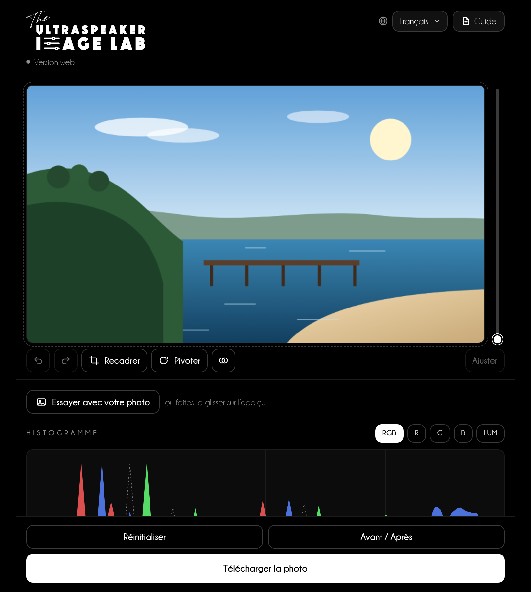
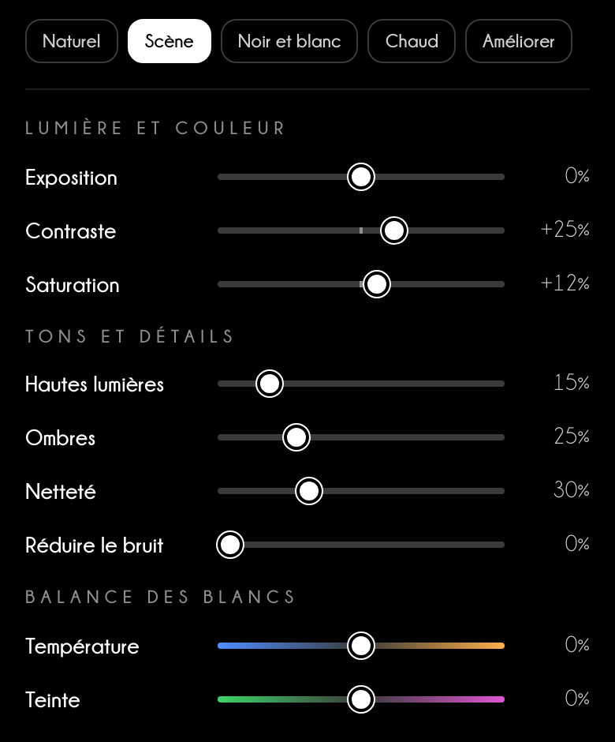
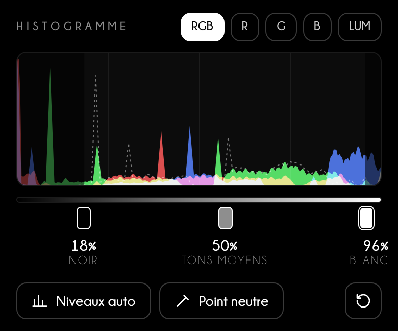
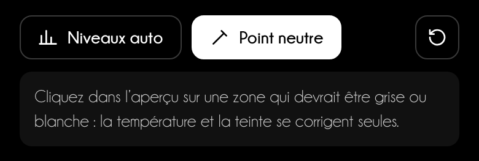
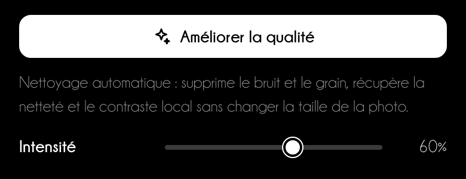
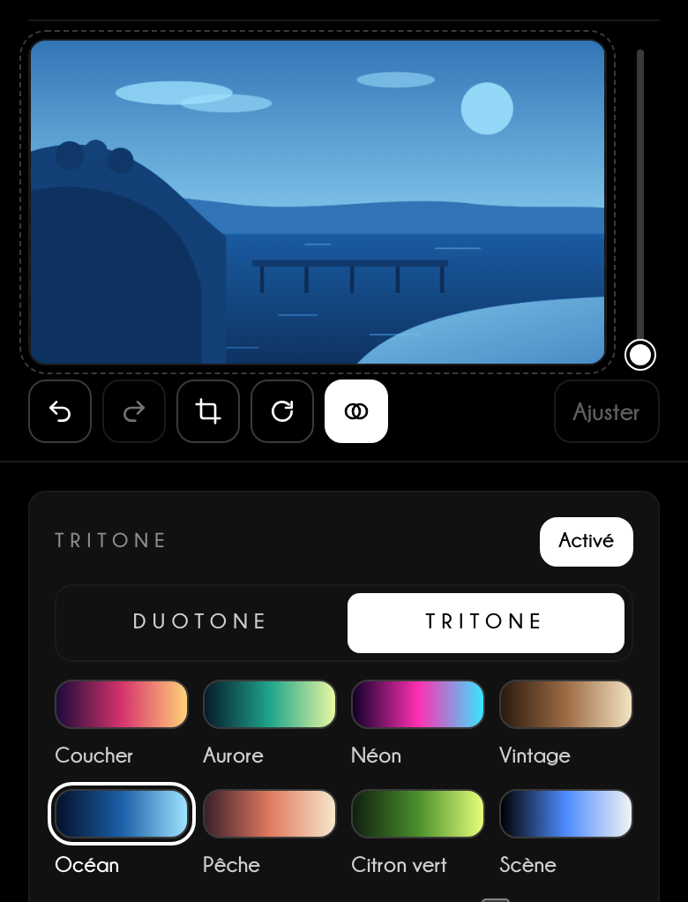
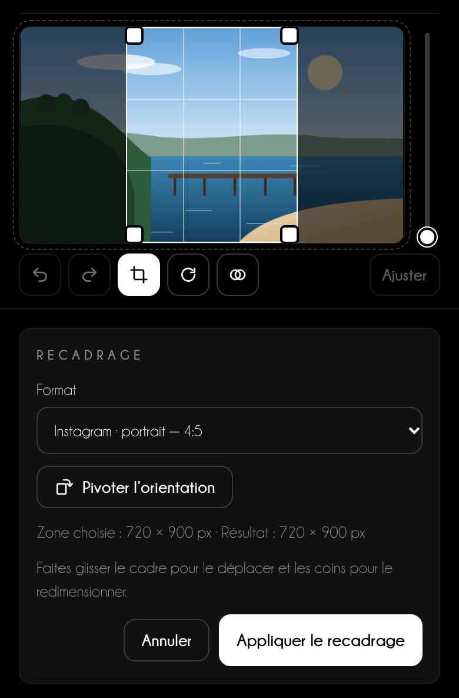
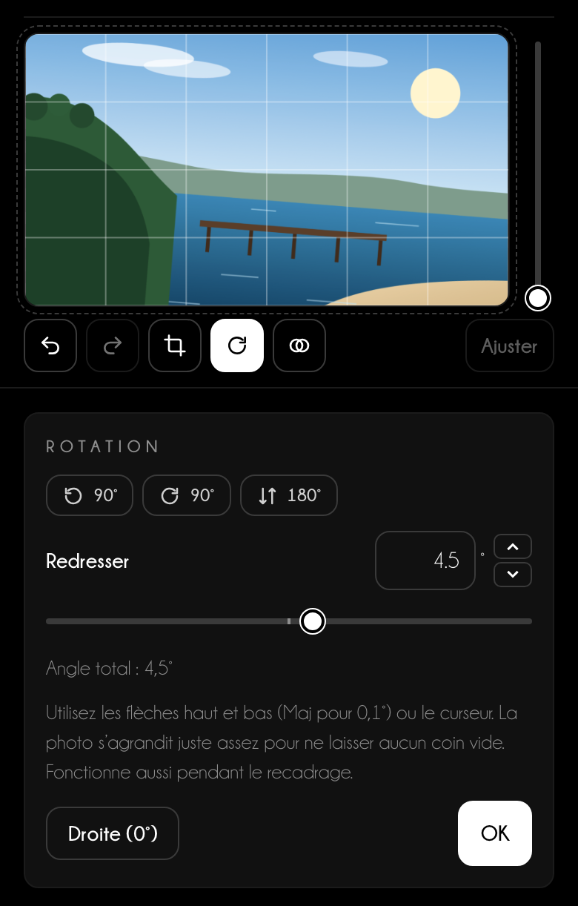
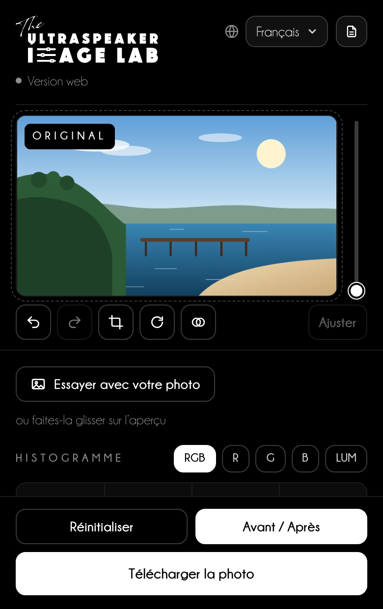
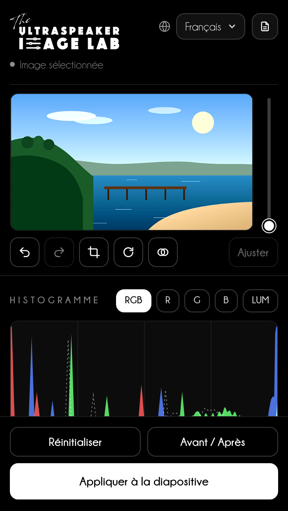

Guide d'utilisation
Des photos claires et lisibles
sur chaque diapositive
Réglez la lumière, la couleur, le recadrage et le DuoTone de vos photos dans le navigateur et, bientôt, directement dans PowerPoint.
Guide d'utilisation
Réglez la lumière, la couleur, le recadrage et le DuoTone de vos photos dans le navigateur et, bientôt, directement dans PowerPoint.
Sommaire
Image Lab règle les photos de vos diapositives comme un logiciel de retouche : niveaux, lumière, couleur, recadrage, rotation et DuoTone, avec l'aperçu toujours sous les yeux.
Dans le navigateur
Ouvrez niki977.github.io/ultraspeaker-image-lab sur ordinateur ou téléphone. Vous chargez une photo, vous la réglez et vous la téléchargez : en JPG, ou en PNG si elle a des parties transparentes.
Dans PowerPoint
Onglet Accueil → groupe The Ultraspeaker → Image Lab. Vous sélectionnez une photo sur la diapositive et le volet la remplace par la version réglée, en conservant l'original.
Bientôt disponible
Le volet pour PowerPoint est en phase de test et sera bientôt disponible. Le chapitre 08 le décrit déjà en entier.
Confidentialité
Les photos sont traitées sur votre appareil et ne sont jamais envoyées à un serveur. Le navigateur ne garde que la langue choisie, commune à tous les Labs The Ultraspeaker.
| Ce qu'il vous faut | Détails |
|---|---|
| Version web | Un navigateur à jour (Chrome, Edge, Safari, Firefox), aussi sur téléphone |
| Volet PowerPoint | Microsoft 365 : Windows 2601 ou ultérieur, Mac 16.105 ou ultérieur, ou PowerPoint pour le web |
En haut, l'aperçu reste fixe pendant que vous parcourez les réglages ; en bas, les boutons pour comparer et télécharger.

1 2 3 4 5 6 7Partez d'un style rapide, puis affinez avec les curseurs en regardant l'aperçu.

Bon à savoir
Les styles rapides ne changent que la lumière et la couleur : recadrage, rotation, « Améliorer la qualité » et DuoTone restent comme vous les avez réglés.
L'histogramme montre combien de points de la photo se trouvent dans chaque ton. Les trois poignées en dessous décident où commence le noir, où se situe le gris moyen et où finit le blanc.


« Améliorer la qualité » nettoie les photos prises en faible lumière ; Duo & Tri Tone recolore la photo avec les couleurs de votre présentation.
Améliorer la qualité
Cliquez sur Améliorer la qualité : Image Lab estime le bruit de la photo, le réduit en respectant les contours, accentue les détails et augmente le contraste local. Avec Intensité, vous choisissez jusqu'où aller ; la taille de la photo ne change pas.


Bon à savoir
Avec le DuoTone, la saturation ne sert plus et disparaît ; Température et Teinte deviennent « Filtre chaud/froid » et « Filtre vert/magenta » et déplacent la lumière entre les couleurs, comme les filtres du noir et blanc.
Chaque format fixe seulement les proportions : la photo garde tous ses pixels.

| Où va la photo | Format dans le menu | Proportions |
|---|---|---|
| Diapositive plein écran | Diapositive 16:9 | 16:9 |
| Publication carrée | Instagram · post | 1:1 |
| Publication verticale | Instagram · portrait | 4:5 |
| Stories, Reels, Statut WhatsApp | Instagram / Facebook · Stories et Reels | 9:16 |
| Publication avec lien | Facebook · post, LinkedIn · post | 1,91:1 |
| Tirage photo | Photo 10 × 15 cm | 2:3 |
Besoin d'une taille exacte en pixels ou en centimètres ? Choisissez Taille personnalisée… : c'est le seul format qui amène la photo à cette taille.

Avant de télécharger, comparez le résultat avec la photo de départ.

Bientôt disponible
Le volet pour PowerPoint est en phase de test et sera bientôt disponible. En attendant, utilisez la version web et insérez la photo téléchargée dans la diapositive.
Dans le volet, les réglages sont les mêmes que dans la version web ; seule la dernière étape change : la photo revient sur la diapositive.

1 2 3Un projecteur écrase les ombres et ternit les couleurs : une photo parfaite sur votre écran peut devenir grise dans la salle.
Conseil de speaker
Pour les photos cliniques, partez de Scène et vérifiez l'histogramme : les détails importants ne doivent se trouver ni dans le premier ni dans le dernier dixième. Si la salle est lumineuse, réglez Ombres entre +25 % et +40 %.
Conseil de speaker
Utilisez les mêmes réglages pour toutes les photos d'une séquence, par exemple avant et après un traitement : même style, même température, même recadrage. Le public doit remarquer le résultat clinique, pas une lumière différente.
| Usage | Recadrage | Largeur minimale |
|---|---|---|
| Photo plein écran | Diapositive 16:9 | 1920 px |
| Photo sur une demi-diapositive | 3:2 ou 4:5 | 1000 px |
| Deux photos côte à côte (avant / après) | les mêmes proportions pour les deux | 960 px chacune |
Assistance
Écrivez à info@theultraspeaker.com en précisant si vous utilisez la version web ou PowerPoint (Mac, Windows ou web) et, si possible, joignez une capture d'écran.

Knowledge is not enough.
From expert to Ultraspeaker.
theultraspeaker.com · info@theultraspeaker.com